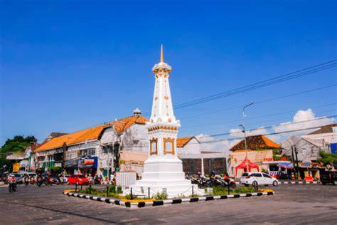
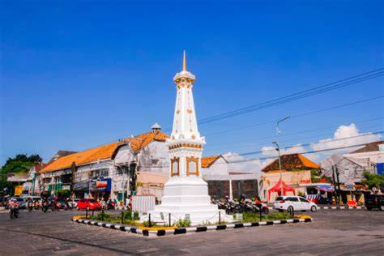

Yogyakarta, atau akrab disebut Jogja, adalah kota yang menjadi simbol kehangatan dan kearifan budaya Jawa. Di setiap sudutnya, wisatawan dapat merasakan harmoni antara tradisi dan kehidupan modern. Jogja bukan sekadar tempat, melainkan perasaan — perpaduan antara seni, sejarah, dan keramahan masyarakatnya yang membuat siapa pun merasa “pulang”.
Kota ini terkenal dengan deretan destinasi bersejarah dan ikonik, seperti Candi Borobudur yang megah, Candi Prambanan yang anggun, dan Keraton Yogyakarta yang menjadi pusat budaya Jawa hingga kini. Di Malioboro, wisatawan bisa menyusuri jalan penuh warna yang dipenuhi pedagang batik, kuliner khas, dan suasana malam yang hidup. Sementara itu, daerah sekitar seperti Parangtritis, Kaliurang, dan Gunung Merapi menawarkan keindahan alam yang menenangkan bagi para pencinta petualangan.
Selain warisan budaya dan sejarahnya, Yogyakarta juga menjadi pusat pendidikan dan seni di Indonesia. Banyak galeri, museum, dan pertunjukan wayang atau gamelan yang menggambarkan kekayaan ekspresi masyarakatnya. Dengan masyarakat yang ramah dan suasana kota yang penuh makna, Yogyakarta bukan hanya tempat berlibur — tapi tempat untuk memahami filosofi kehidupan yang sederhana namun dalam: “ngayomi, ngopeni, lan nyawiji” — hidup dalam keseimbangan dan kebersamaan.